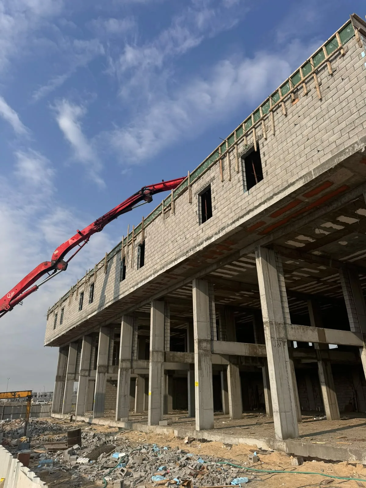

عندما تبحث عن تسليم مفتاح في الرياض فأنت غالبًا لا تريد مجرد مقاول ينفذ بندًا واحدًا، بل تريد جهة تتحمل تنظيم رحلة المشروع بالكامل: بداية من فهم الاحتياج وتحديد نطاق العمل، مرورًا بمرحلة البناء أو الترميم، ثم أعمال الكهرباء والسباكة والتكييف، وبعدها التشطيبات والدهانات والأرضيات والديكور، وصولًا إلى تسليم نهائي واضح يمكن مراجعته واستلامه.
ميزة تسليم المفتاح أنه يقلل التشتت بين أكثر من مقاول، لكن نجاحه يعتمد على تفاصيل كثيرة. إذا لم يتم تحديد البنود من البداية، أو لم يتم توثيق المواد، أو لم تُراجع مسارات الكهرباء والسباكة قبل التشطيب، فقد يتحول النظام من حل مريح إلى مصدر خلافات وتكاليف إضافية. لذلك هذا الدليل يوضح لك كيف تفكر في مشروع تسليم المفتاح بطريقة عملية قبل التعاقد.
ما معنى تسليم مفتاح في المقاولات؟
المقصود بتسليم المفتاح أن تكون هناك جهة واحدة مسؤولة عن تنفيذ المشروع حتى يصبح جاهزًا للاستخدام وفق نطاق متفق عليه. لا يعني ذلك أن كل شيء مفتوح بلا حدود؛ بل يعني أن البنود المحددة في العقد يتم تنفيذها بشكل متكامل، مع تنسيق بين المراحل بدل أن يضطر العميل لإدارة كل تخصص بمفرده.
تنسيق المراحل
الجهة المنفذة تراجع علاقة البناء بالتشطيب والكهرباء والسباكة حتى لا تتعارض الأعمال مع بعضها.
وضوح المسؤولية
بدل تعدد المسؤوليات بين مقاول عظم ومقاول تشطيب وفنيين منفصلين، يصبح هناك مسار متابعة واحد.
المراحل الأساسية لتنفيذ مشروع تسليم مفتاح
تمر مشاريع تسليم المفتاح عادة بعدة مراحل متتابعة. تبدأ بمعاينة أو دراسة أولية، ثم تحديد النطاق، ثم جدولة التنفيذ، وبعد ذلك تنفيذ الأعمال الإنشائية أو الترميمية، ثم الأعمال الفنية، ثم التشطيبات، وأخيرًا مرحلة المراجعة والتسليم. قوة الشركة تظهر في قدرتها على منع التداخلات الخاطئة بين هذه المراحل.
- تحديد نوع المشروع: فيلا، شقة، مكتب، محل، ملحق أو مبنى قائم.
- تجهيز قائمة بنود واضحة تشمل ما يدخل ضمن السعر وما لا يدخل.
- مراجعة المخططات أو الصور أو حالة الموقع قبل وضع تصور نهائي.
- اعتماد المواد والخامات والألوان قبل مراحل التشطيب الحساسة.
- مراجعة الملاحظات في نهاية كل مرحلة وليس عند التسليم فقط.
أهم البنود التي يجب توضيحها في عرض السعر
عرض السعر الجيد في مشروع تسليم مفتاح لا يجب أن يكون رقمًا عامًا فقط. يجب أن يوضح الأعمال المدنية، أعمال الكهرباء والسباكة، التشطيبات، الدهانات، الأرضيات، الأسقف، الأبواب، النوافذ، العزل إن وجد، وطريقة اعتماد المواد. كلما زاد الوضوح في العرض، قلت احتمالية الخلاف أثناء التنفيذ.
أخطاء شائعة في مشاريع تسليم المفتاح
من أكثر الأخطاء شيوعًا أن يبدأ العميل التنفيذ دون قائمة واضحة للمواد أو دون مراجعة مواقع نقاط الكهرباء والسباكة. كذلك من الأخطاء الاعتماد على السعر الأقل دون مقارنة نطاق العمل. قد تجد عرضًا أقل لأنه لا يشمل بعض البنود المهمة، أو لأنه يستخدم خامات غير واضحة، أو لأنه يترك قرارات كثيرة لمنتصف المشروع.
متى يكون تسليم المفتاح هو الخيار الأنسب؟
هذا النظام مناسب إذا كنت تريد تقليل إدارة التفاصيل اليومية، أو كان المشروع متعدد التخصصات، أو كنت تنفذ فيلا أو مكتبًا أو محلًا يحتاج تنسيقًا بين الأعمال. كما يناسب من يرغب في جهة واحدة تتابع المشروع وتجمع الصورة الكاملة بدل التعامل مع عدة أطراف كل منهم يرى جزءًا فقط من العمل.
كيف تساعدك شركة تعاود؟
شركة تعاود للمقاولات العامة بالرياض تقدم مسارًا متكاملًا لخدمات البناء والتشطيب والترميم وأعمال الكهرباء والسباكة. في مشاريع تسليم المفتاح نركز على فهم نطاق المشروع أولًا، ثم ترتيب الأولويات، ثم توضيح مراحل التنفيذ، ثم متابعة التفاصيل حتى مرحلة التسليم النهائي.
هل تسليم المفتاح يشمل التصميم الداخلي؟
يمكن أن يشمل التصميم أو التنسيق الداخلي إذا تم الاتفاق عليه ضمن النطاق، والأفضل توضيح ذلك قبل عرض السعر.
هل يناسب تسليم المفتاح الفلل فقط؟
لا، يمكن استخدامه للفلل والشقق والمكاتب والمحلات والملاحق، حسب طبيعة المشروع وحجم الأعمال المطلوبة.
ما أهم شيء قبل التعاقد؟
أهم شيء هو توثيق نطاق العمل والمواد وطريقة الاستلام حتى تكون التوقعات واضحة من البداية.
تحتاج تنفيذ مشروع كامل في الرياض؟
تواصل مع فريق تعاود لمناقشة نطاق المشروع وتحديد الأنسب بين البناء، الترميم، التشطيب، أو تسليم المفتاح.
طلب عرض سعر